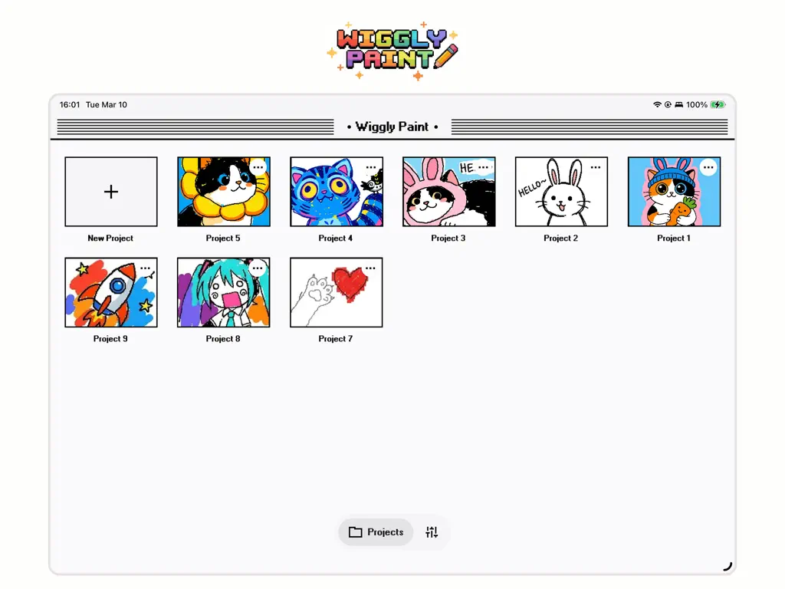
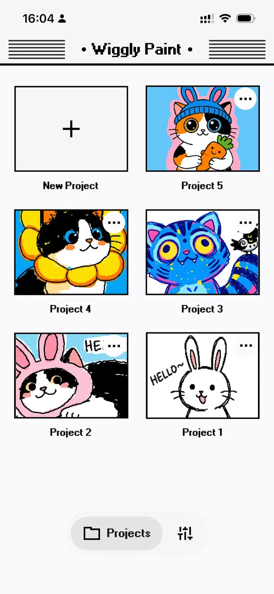

我用 WigglyPaint 把每周的动态素材生产链砍了三刀
以前做一张会动的社交配图要三四个软件切换加半小时时间轴调试，现在用一支带抖动的画笔直接出活。这篇讲我怎么把 WigglyPaint 嵌进每周的素材生产流程，以及哪些环节最容易断链。
每周一上午九点，我有一个固定任务：给三条不同的社交渠道准备一批会动的配图和梗图。以前这套流程跑下来要两个小时，中间要在 Photoshop、在线 GIF 制作器、微信表情编辑器之间来回切换。现在一条链就走完了，大部分时间省在了"画的时候就在动"这件事上。
旧流程：三个软件 + 反复导出
先说旧流程卡在哪。我需要的素材大致分三类：产品宣传用的动态小贴纸、内部飞书群用来活跃气氛的梗图、课件里偶尔需要的会动的示意图。以前这三类各走各的路：
贴纸在 Photoshop 里画静态图 → 导入到 GIF 制作器（有时是 Piskel，有时是在线工具）逐帧加动画 → 导出 GIF → 还要再调一版 MP4 给 Instagram Reels 用。梗图更折腾——先找一张静态梗图模板，然后要么在手机上的表情编辑器里手动加抖动文字，要么回到电脑上重复一遍 GIF 的流程。示意图虽然简单，但"在静态 PPT 里插个会抖的箭头"这件事，我试过插件也试过录屏，都不顺手。
三个软件切换的成本比时间轴本身还大。每次换工具都要重新对齐画布尺寸、重新选导出格式，最烦的是 GIF 制作器默认把帧速压得很慢，我得手动拉参数才能让动画看起来不拖沓。
新流程：WigglyPaint 卡在创作入口
现在我把 wigglypaint官网 上这款 App 作为整条链的创作起点，所有素材都从它的画布里出来。
上下游配合是这样的：
第一步，在 WigglyPaint 里一次性出完所有素材。安装包从官方下载拿，iPad 上打开 App，用 Apple Pencil 直接画——因为画的同时笔触就在抖动，所以不需要后期再加动画。Marker 笔粗线条大幅摇摆用来画梗图角色和贴纸轮廓，Brush 填色，Pencil 写细节和文字。我把画布尺寸设成 1080×1080，导出时三套格式（GIF、MP4、Live Photo）一次性搞定，省了来回调尺寸和换工具。

第二步，导出后直接分发。GIF 直接丢飞书群和微信聊天——WigglyPaint 导出的 GIF 体积控制得不错，单帧抖动的小贴纸一般不超过 200KB，不会被聊天软件二次压缩糊掉。MP4 给 Reels 和视频号，Live Photo 给 iPhone 用户的 iMessage 互动。这步已经不需要任何二次处理了。
第三步，需要静态版本时再回到 WigglyPaint。有时候同一张素材还需要静态图用在文档或 PPT 里——直接在 WigglyPaint 里导出 PNG 就行，同一画布随时切换导出格式，不用重画。
这条链的核心是：WigglyPaint 把"画"和"动画"合成了一个动作。以前三四个软件各管一段，现在一个软件从创意到成品就出来了。
实操里最容易断链的两个环节
说点实际的。这条链跑了大概两个月，有两个环节我踩过坑，现在有了固定的处理方式。
第一坑：Classic 编辑器的自动保存
我一开始习惯用 Classic Pixel 风格——粗像素边框、8-bit 感，挺对我胃口。但 Classic 编辑器有个已知问题：清空画布之后 undo 不回来，而且退出 App 前最后一分钟的改动偶尔会丢。上个月我有一张画了四十分钟的梗图因为这个 bug 丢过一次，之后就养成了"每画完一个素材就手动导出一次"的习惯。
这些编辑器行为差异在wigglypaint文档里有详细说明。现在的做法是：重要素材用 Modern 编辑器（它的清空后 undo 是正常的），只有纯像素风的东西才切 Classic，而且画的时候每完成一个元素就点一下导出。多花五秒钟，比重画四十分钟划算。
第二坑：背景图层的原图边界
WigglyPaint 支持导入照片做背景图层，我有时候会从网上抓一张梗图模板直接在上面加抖动文字。这里有个边界需要注意：导入的照片只存在本地，导出时会被"烘焙"进最终作品，原图不会上传。但如果我后来想换一张底图重新画，就得重新导入——WigglyPaint 不保留原始背景的分层。
所以我的做法是：从外部导入的背景图统一存在 iPad 的"素材"相册里，文件名按用途命名（比如"meme-template-cat.png"），万一要重做能快速找回来。自己手绘的就没这个问题，画布本身就是源文件。

效果与边界
量化一下省了多少事。旧流程每周大概花 100 分钟：Photoshop 画静态 + GIF 工具加动画 + 导出调格式 + 偶尔翻车重跑。新流程稳定在 30 分钟以内，其中 25 分钟在画，5 分钟导出和分发。少了两次手动导出和三次软件切换，还有以前因为帧速没调对导致的重导出，现在根本不会发生。
但这套流程也有明确的边界。如果哪天我需要一个精确到帧的动画——比如眨眼、走路循环——WigglyPaint 就不适合了。它把动画做进画笔这件事，本质上是用"放弃帧控制"换"速度和风格统一"。我有朋友是做独立游戏的像素动画师，他试过两天就换回 Piskel 了，因为他需要精确控制每一帧的偏移量，而 WigglyPaint 的抖动是随机的。
另外隐私这点我挺在意。WigglyPaint 不要求注册账号、不上传作品、App Store 隐私政策明确写"不收集任何数据"——这意味着我画的所有素材都留在设备上，不需要担心云端泄漏。唯一要注意的是社区画廊，我从来没发过，因为 App 内似乎没有删除按钮，发出去就撤不回来了。
什么时候这套流程划算
如果你每周有固定的动态素材产出需求——不管是梗图、贴纸、课件示意图，还是社交媒体上的小动作——而且你不需要精确的帧级控制，那 WigglyPaint 值得放进你的工具箱。
我的判断标准很简单：旧流程里我花在"软件切换和格式调参"上的时间，超过了"实际创作"的时间，那就该换工具了。WigglyPaint 解决的正是这个问题——它不试图替代 Photoshop 或 Piskel，而是在"快速出可分享的动图"这个狭窄但高频的场景里，把整条链缩短了三分之二。这个软件的资料我同步维护在 GitHub、Gitee 和 GitCode 三个仓库里，国内访问有需要直接换着用。